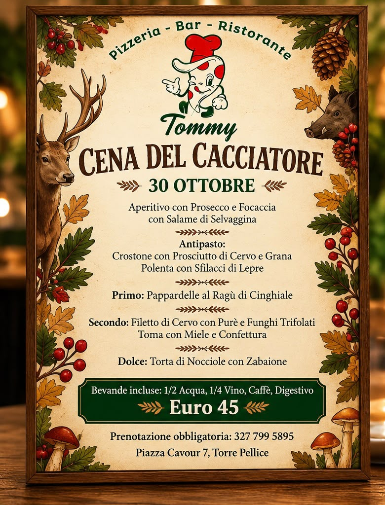

30 OTTOBRE
Cena del Cacciatore
Aperitivo, antipasto, primo, secondo, dolce e bevande incluse.
€ 45 a persona
Prenota su WhatsApp ↗Una pizza da condividere, qualcosa di buono da mettere al centro e il piacere di sentirsi a casa. Da Tommy si viene per mangiare bene e stare in compagnia.

Serate speciali e pizze del mese: scopri cosa c’è di nuovo e contattaci per informazioni.
Gli appuntamenti possono variare: contattaci per confermare disponibilità e prenotazioni.
Un posto semplice: si sceglie qualcosa di buono, si brinda, si ride. E magari si ordina anche il dolce.
Dalle pizze agli antipasti da mettere in mezzo al tavolo, l’idea è quella di stare bene insieme. Il nostro stile? Ospitalità sincera, un pizzico di ironia e nessuna voglia di prendersi troppo sul serio.
Il cibo fa partire la serata. Le persone, le battute e i momenti condivisi fanno il resto.
Ecco qualche scatto vero delle nostre pizze, dei piatti e del locale. Il resto? Lo aggiungeremo un po’ alla volta, come si fa con le cose buone.


Ci piace accogliere le persone con calore e prenderci il giusto un po’ in giro. Perché un ristorante è fatto anche di momenti spontanei, battute e ricordi da raccontare.
Passa a salutarci ↗Hai voglia di una pizza o di una serata in compagnia? Contatta il locale per informazioni, orari e prenotazioni.
Sostituire questi spazi con recensioni reali, pubblicate con il consenso dei clienti.
Nome C.
Nome R.
Nome M.
Hai già mangiato da noi? Leggi o lascia una recensione su Google ↗